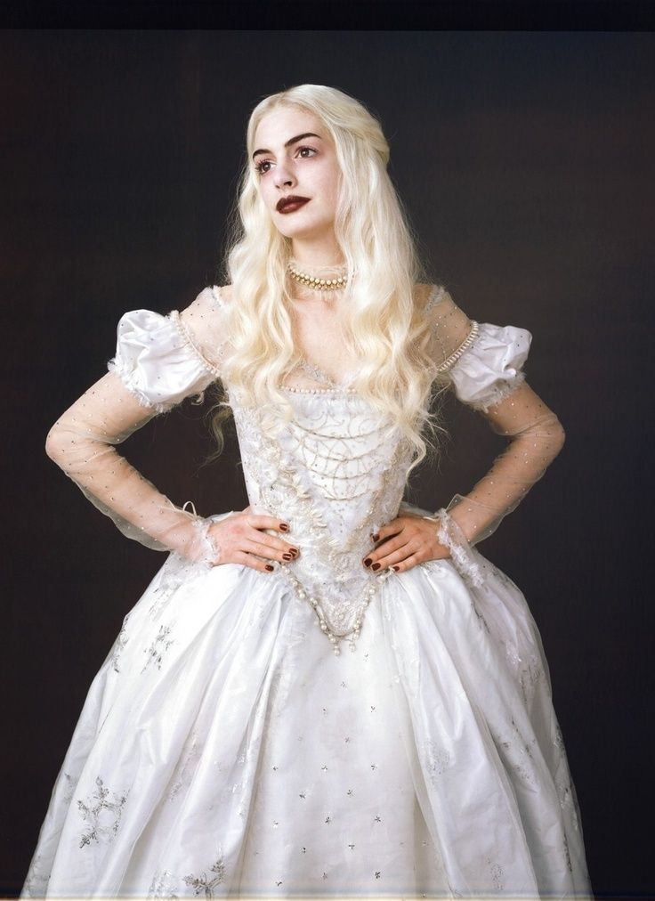
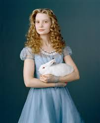
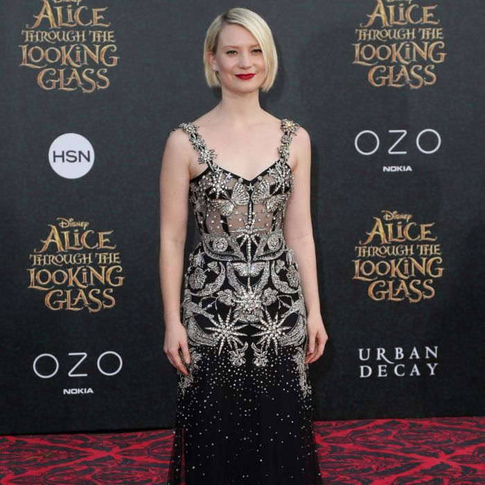
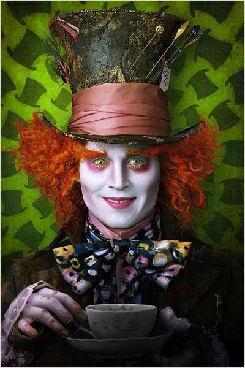
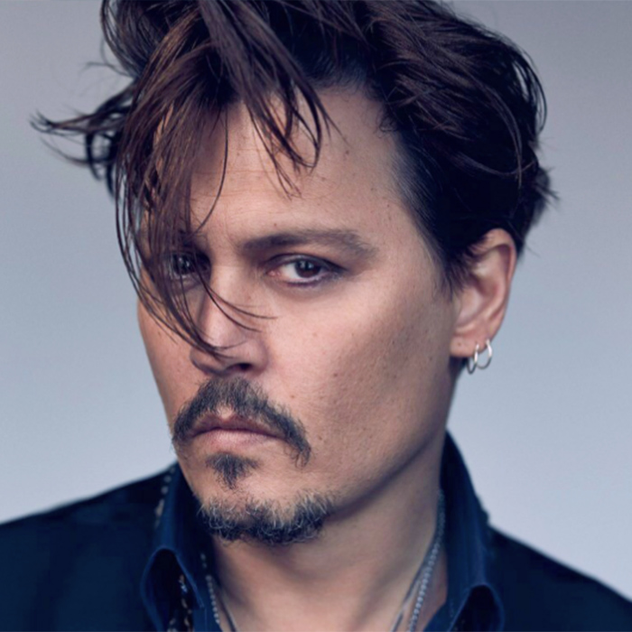
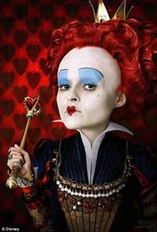
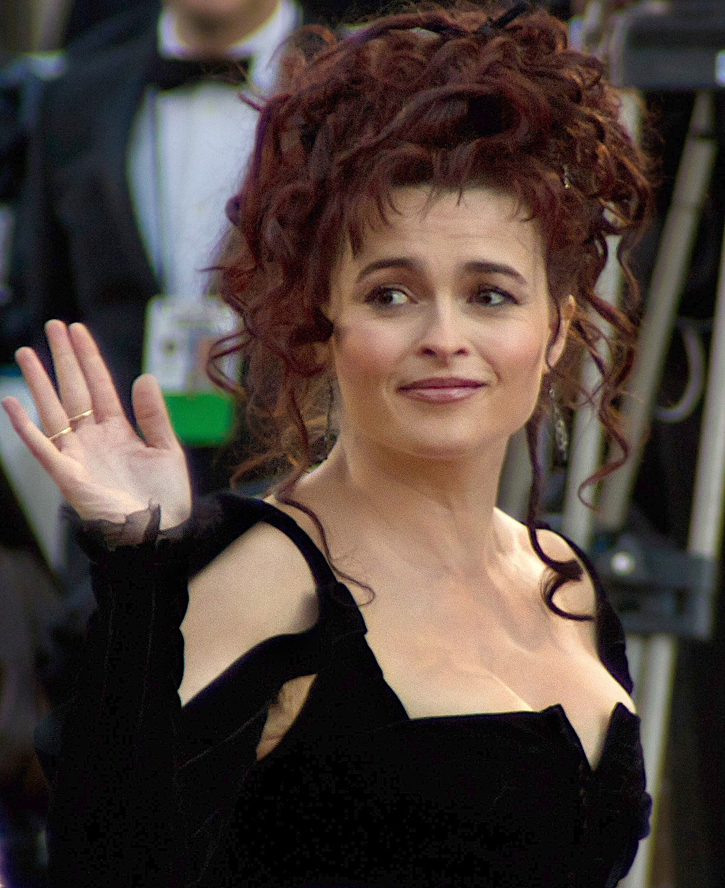
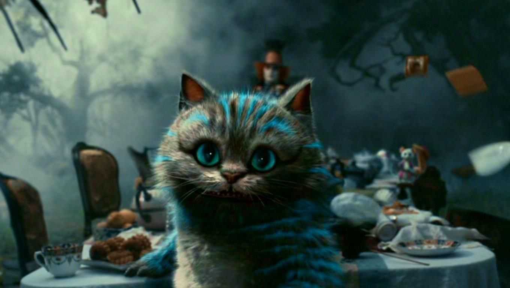

Nome:Mia Wasikowska
Idade:32 anos
Nascionalidade:Camberra,Australia
Ganhou reconhecimento mundial em 2010 depois de estrelar como Alice em Alice no País das Maravilhas

Nome:Anne Hathaway
Idade:39 anos
Nascionalidade:Brooklyn,Nova York,EUA
Anne Hathaway é uma atriz norte-americana. Hathaway formou-se na Millburn High School, em Nova Jérsia, onde atuou em várias peças. Quando adolescente, ela foi escalada para a série de televisão Get Real e sua estreia como protagonista ocorreu em 2001 no longa-metragem da Disney, The Princess Diaries.


Nome:Johnny Depp
Idade:58 anos
Nascionalidade:Owensboro,Kentucky,EUA
John "Johnny" Christopher Depp II é um ator, músico, produtor de cinema e diretor norte-americano, três vezes indicado ao Oscar de Melhor Ator, e vencedor de um Globo de Ouro.


Nome:Helena Bomhan Carter
Idade:56 anos
Nascionalidade:Londres,Reino Unido
Helena Bonham Carter, é uma atriz britânica. Ela já recebeu diversos prêmios ao longo de sua carreira, incluindo um BAFTA de melhor atriz coadjuvante, um Emmy Internacional e dois SAG Awards

Nome:Stephen Fry
Idade:64 anos
Nascionalidade:Hampstead,Londres,Reino Unido
Stephen John Fry é um ator,roteirista,apresentador de televisão, cineasta e comediante britânico.
Topo da pagina